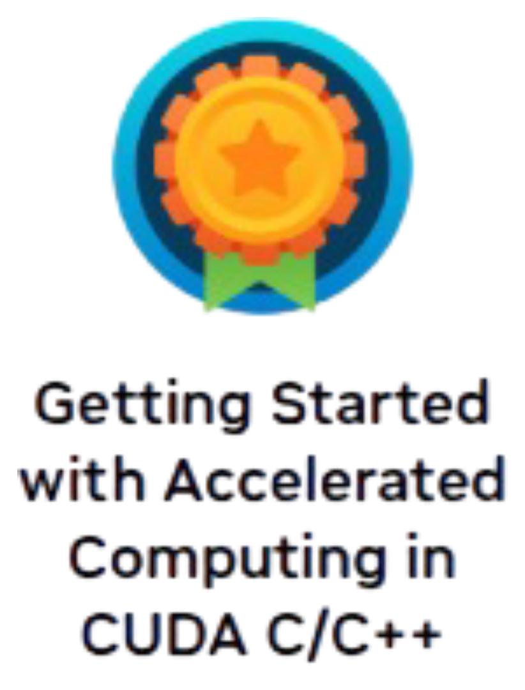
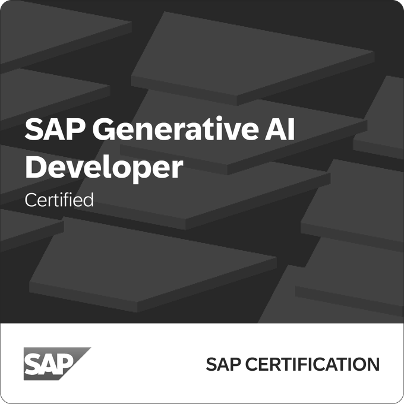

-
2022 — PresentSAP · Software EngineerBDC-FOS, CX, Gigya · Tel Aviv, IsraelSoftware Engineer specializing in high-throughput backend infrastructure, microservices, and distributed systems.
- Cross-Region Enterprise Architecture & Tenant Lifecycle: Designed and implemented cross-region asynchronous APIs using Spring Boot, Kafka, Temporal, and PostgreSQL to validate data-sharing eligibility across hybrid enterprise landscapes. Prevented execution of actions prone to failure, reducing action failure rates from 90% to 5%.
- Resilience & Error Remediation: Extended cross-microservice differentiation between permanent and temporary errors, delivering actionable error messages (intervene, wait, report) and reducing customer-reported bugs by 50%.
- High-Performance Microservices: Extensible FastAPI test collector routing data into HanaDB as an automated quality gate in the ring deployment flow. Built high-throughput microservices using Spring Boot, Kafka, and gRPC for dynamic topic orchestration.
- Identity & Zero-Trust Access: Built a FastAPI authentication microservice with SAP IAS/OIDC for dynamic scope-based RBAC, alongside NestJS Istio external authorizers for validating tenant mTLS certificates. Extended CDP gateway with MS Orleans for license allowlists.
- Security & Penetration Testing: Architected custom penetration testing suites against CIAM infrastructure using Rust Tokio to demonstrate account theft vulnerabilities, directly driving privilege hardening and comprehensive audit logging.
- Generative AI & Platform Tooling: Designed a LangChain-powered RAG service and FastAPI orchestrator integrating Slack, SMTP, Jenkins, GitHub, Artifactory, Jira, ArgoCD, and Kubernetes to automate ring deployment reports and bug triage.
- Log Analytics & Load Testing: Engineered a Blazor data analytics tool recursively extracting and flattening large-scale ElasticSearch JSON logs for rapid root-cause analysis; built Locust suites to load-test core microservices.
- Engineering Leadership & Culture: Directed a cross-functional Agile Kanban team of 5 engineers building internal developer tools (reaching 200 active users), and spearheaded a weekly technical lecture series for 10 engineers to accelerate technology adoption.
Spring Boot Kafka Temporal PostgreSQL HanaDB Rust Tokio FastAPI NestJS Istio mTLS Kubernetes MS Orleans LangChain RAG gRPC ElasticSearch Locust -

2025NVIDIA · CUDA SpecialistAccelerated Computing in CUDA C/C++ · CertificateHigh-performance accelerated computing and parallel systems engineering on modern NVIDIA GPU architectures.- Hardware & Execution Optimization: Mastered GPU microarchitecture, warp execution, thread block scheduling, and high-performance kernel design – graduating with a final score of 100.
- Memory Hierarchy & Throughput: Optimized unified memory management, memory coalescing, grid-stride loops, and asynchronous data transfer streaming to maximize compute throughput.
CUDA C/C++ GPU Architecture Parallel Algorithms Unified Memory Kernel Optimization Performance Profiling -

2025SAP · Generative AI DeveloperEnterprise LLM Systems & Prompt Orchestration · CertificationCertified specialization in production-grade LLM architectures, intelligent agent tooling, and enterprise AI platforms.- Enterprise AI Systems: Designed enterprise prompt orchestration workflows, vector retrieval pipelines (RAG), and integration with SAP AI Core infrastructure.
- Autonomous Agent Tooling: Built automated tool calling, guardrails, and validation pipelines for contextual reasoning across complex enterprise business data.
Generative AI LLMs LangChain Vector RAG SAP AI Core Prompt Engineering -
2021 — 2022NCR (Jumbo) · Specialist EngineerPOS Architecture & Hardware Integration · Raanana, IsraelMission-critical point-of-sale systems, retail transaction engines, and secure enterprise peripheral hardware integration.
- POS Architecture & Extensibility: Engineered dynamic XML data injection for receipt printers using the decorator pattern, and architected modular support for coupons, deals, and stamp-based billing via reflection patterns.
- Hardware Integration & Compliance: Maintained and troubleshot critical hardware integrations with secure PIN pads and Fiscal Data Modules (FDM) to ensure high system availability, financial data integrity, and regulatory compliance.
C# .NET Core XML Pipeline Decorator Pattern Fiscal Modules Hardware Security -

2018 — 2020Technion (PET) · Software EngineeringPractical Software Engineer · Graduated with Honors (GPA 87)Rigorous academic training in computer science fundamentals, software engineering, systems programming, and database architecture.- Academic Honors: Graduated with honors with an overall GPA of 87 across advanced algorithmic and engineering coursework.
- Core Foundations: Low-level systems programming in ANSI C and C++, object-oriented design in Java and C#, relational database design, data structures, algorithms, operating systems, and computer networking.
Algorithms Data Structures ANSI C C++ Java OOP Database Design Operating Systems